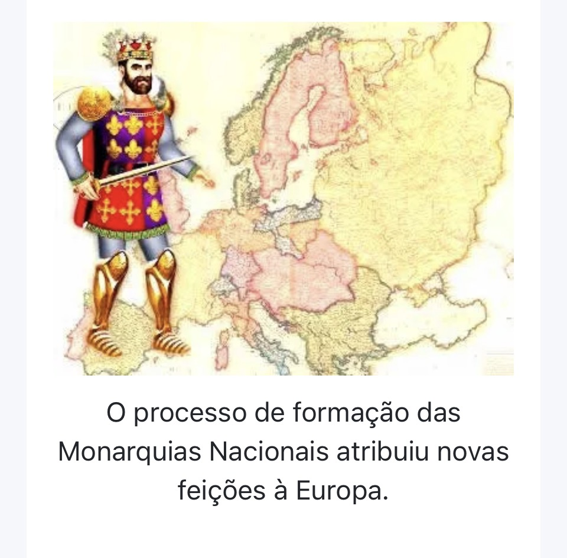
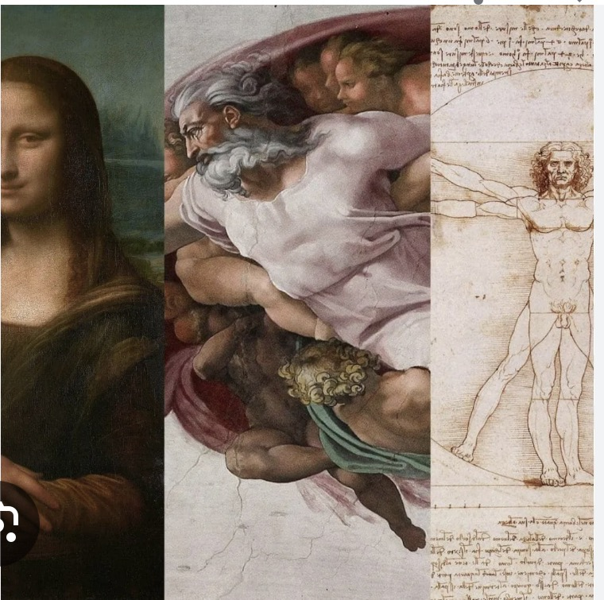

Muito antes das pirâmides do Egito ou das grandes cidades da Grécia e de Roma, existiu
uma terra cheia de mistérios e invenções.
Essa terra se chamava Mesopotâmia, que
significa “terra entre rios”.
Mas que rios são esses? Os rios Tigre e Eufrates, que banham
uma região que hoje fica no atual Iraque.
Foi ali, entre esses rios, que surgiram algumas das primeiras civilizações da história!
Imagine um lugar onde o solo é fértil, graças aos rios que trazem água todos os anos.
Os
povos que viviam ali aprenderam a controlar a água por meio de canais e construíram
plantações.
Isso permitiu que deixassem de ser nômades e passassem a viver em cidades
fixas, com casas, templos e mercados.
O primeiro povo que se destacou ali foram os sumérios.
Eles inventaram uma das
primeiras formas de escrita: a escrita cuneiforme, feita em tábuas de argila com sinais em
forma de cunha.
Também criaram leis, templos enormes chamados zigurates, e até
estudavam astronomia!
Depois vieram outros povos poderosos, como os acádios, babilônios e assírios.
Cada um
deixou sua marca.
Um dos reis mais famosos foi Hamurábi, que mandou escrever um
conjunto de leis conhecido como Código de Hamurábi, com a famosa ideia de “olho por
olho, dente por dente”.
A vida na Mesopotâmia era cheia de novidades:
eles criaram calendários, desenvolveram
a matemática e o comércio, e seus templos eram centros religiosos e também de estudo.
Mesmo com guerras e mudanças, a Mesopotâmia foi um lugar muito importante, pois deu
origem a muitas das coisas que usamos até hoje, como a escrita, as leis, a agricultura
organizada e as cidades planejadas.
A história da Mesopotâmia nos mostra que, há milhares de anos, os seres humanos já
eram criativos, organizados e cheios de ideias geniais.
E tudo isso começou ali, na terra
entre rios.
Exercícios:
1. Onde ficava localizada a Mesopotâmia e o que significa esse nome?
A Mesopotâmia ficava entre os rios Tigre e Eufrates, e seu nome significa “terra entre
rios”.
2. Qual foi uma das grandes invenções dos povos mesopotâmicos?
A escrita cuneiforme, usada para registrar informações em tabuletas de argila

Você já imaginou viver em um lugar onde o rei era considerado um deus? Onde havia pirâmides gigantes, múmias e um rio que dava vida a tudo? Pois esse lugar existiu: era o Egito Antigo, uma das civilizações mais impressionantes da história! Tudo começou às margens do Rio Nilo, no nordeste da África. O Nilo era como uma veia de vida no meio do deserto. Todos os anos, ele transbordava, molhava a terra e deixava o solo fértil. Foi ali que os egípcios aprenderam a plantar, criar animais e construir suas primeiras vilas, que depois se tornaram grandes cidades. No Egito, quem mandava era o faraó – um rei que também era visto como um deus na Terra. Ele controlava tudo: as leis, as construções, a religião e até os alimentos. Para os egípcios, manter o equilíbrio do mundo era dever do faraó. Uma das maiores marcas dessa civilização são as pirâmides, como a de Quéops, em Gizé. Elas eram tumbas gigantescas, construídas para abrigar os corpos dos faraós após a morte. Os egípcios acreditavam na vida após a morte e, por isso, faziam rituais especiais para preservar o corpo: a famosa mumificação. Mas o Egito não era só pirâmide e múmia! Lá também surgiram muitas invenções: eles criaram uma forma de escrita chamada hieróglifos, faziam medicina, astronomia, matemática e organizavam o tempo com calendários baseados no movimento das estrelas. A religião egípcia era politeísta – eles acreditavam em vários deuses, como Rá (o deus do sol), Ísis (a deusa da magia) e Osíris (o deus do mundo dos mortos). Os templos egípcios eram enormes e belíssimos, com colunas gigantes e paredes cheias de desenhos coloridos. Durante séculos, o Egito foi uma potência. Mas, com o tempo, foi sendo conquistado por outros povos, como os persas, os gregos (com Alexandre, o Grande) e os romanos. Mesmo assim, o legado do Egito atravessou os séculos. Hoje, as pirâmides, as múmias, os deuses e os mistérios do Egito Antigo continuam encantando o mundo e nos lembrando de como aquele povo, há milhares de anos, já era sábio, criativo e grandioso.

Você já ouviu falar dos deuses do Olimpo? De heróis como Hércules ou Aquiles? De cidades chamadas Atenas e Esparta? Pois bem, tudo isso faz parte de um lugar incrível chamado Grécia Antiga, onde nasceu boa parte da cultura que ainda influencia o mundo até hoje! A história da Grécia começa há mais de 3 mil anos, em um lugar cheio de montanhas e cercado pelo mar. Lá surgiram pequenos povoados que, com o tempo, viraram cidades muito importantes. Mas diferente de outros povos antigos, os gregos não tinham um único rei mandando em tudo. Cada cidade era independente e tinha seu próprio governo. Essas cidades eram chamadas de cidades-estado, e duas das mais famosas eram Atenas e Esparta. Esparta era uma cidade militar. Lá, todos eram treinados para a guerra desde crianças. A disciplina era rígida, e os soldados eram temidos em toda a Grécia! Já Atenas era bem diferente: era o berço da democracia, onde os cidadãos (homens livres e nascidos em Atenas) podiam participar das decisões políticas. Foi também em Atenas que surgiram grandes pensadores, como Sócrates, Platão e Aristóteles, além de incríveis artistas, arquitetos e escritores de teatro. Os gregos também acreditavam em muitos deuses, como Zeus, Poseidon, Atena e Apolo. Eles achavam que os deuses moravam no Monte Olimpo e influenciavam tudo na vida dos humanos. Para homenageá-los, faziam festas, rituais e até os Jogos Olímpicos, que começaram na Grécia! Mas nem tudo era paz. As cidades gregas viviam em guerra umas com as outras. E depois de muitas brigas, a Grécia acabou sendo conquistada por um jovem rei muito poderoso: Alexandre, o Grande, que espalhou a cultura grega por várias partes do mundo. Mesmo depois de tantas mudanças, a Grécia deixou um legado valioso: ideias de liberdade, democracia, filosofia, arte e ciência. E até hoje, quando estudamos a Grécia Antiga, aprendemos muito sobre como viviam, pensavam e criavam os povos que ajudaram a construir a nossa história. A Grécia Antiga foi uma das civilizações mais influentes da história. Foi lá que nasceram ideias e costumes que usamos até hoje — como a democracia, o teatro, a filosofia e até os Jogos Olímpicos! Tudo começou há mais de 3 mil anos, em uma região cheia de montanhas e cercada pelo mar. Por isso, os gregos viviam em pequenos grupos isolados que, com o tempo, viraram cidades independentes chamadas cidades-estado (ou pólis, em grego). Cada cidade tinha seu próprio governo, leis e costumes. As mais famosas eram Esparta e Atenas, que tinham modos de vida bem diferentes: • Esparta era uma cidade voltada para a guerra. Desde crianças, os meninos eram treinados para se tornarem soldados fortes e disciplinados. O povo vivia de forma simples e militarizada, e o exército espartano era respeitado e temido em toda a Grécia. • Atenas, por outro lado, valorizava o pensamento, a arte e a política. Lá surgiu a democracia, em que os cidadãos (homens livres e atenienses) podiam participar das decisões do governo. Também foi em Atenas que floresceram grandes filósofos, como Sócrates, Platão e Aristóteles, e onde o teatro e as artes ganharam destaque. Os gregos acreditavam em muitos deuses — isso se chama politeísmo. Eles achavam que os deuses viviam no Monte Olimpo, e que cada um controlava uma parte da vida: Zeus era o rei dos deuses, Poseidon cuidava dos mares, Atena era a deusa da sabedoria, e Apolo representava a música e o sol. Para homenagear esses deuses, faziam festas, templos, sacrifícios e criaram os Jogos Olímpicos, realizados em homenagem a Zeus! Com o tempo, as cidades gregas começaram a guerrear entre si. Isso enfraqueceu a região e, mais tarde, a Grécia foi conquistada por Alexandre, o Grande, um rei da chamamos de helenismo. Mesmo depois de ser conquistada, a Grécia deixou um legado enorme para a humanidade: a ideia de democracia, o teatro, a filosofia, a busca pelo conhecimento científico. Até hoje, estudamos a Grécia Antiga porque ela nos ajuda a entender as raízes da nossa cultura ocidental e mostra como os seres humanos sempre buscaram conhecimento, liberdade e beleza.

Era uma vez, há muito, muito tempo, um lugar chamado Roma, que começou de um jeito bem curioso: com uma lenda sobre dois irmãos gêmeos, Rômulo e Remo. Diz a história que eles foram criados por uma loba! Sim, uma loba de verdade! Quando cresceram, decidiram fundar uma cidade. Mas como não conseguiam se entender, Rômulo brigou com Remo e acabou fundando a cidade sozinho. E foi assim que, segundo a lenda, nasceu Roma, no ano de 753 a.C. No começo, Roma era só uma pequena vila. Mas, aos poucos, ela cresceu e se tornou uma das cidades mais poderosas da Antiguidade. A história de Roma é dividida em três grandes fases: 1. Monarquia (reis): Roma teve sete reis, e o último deles era tão cruel que o povo resolveu acabar com a monarquia. Eles disseram: “Chega de reis! Vamos governar juntos!” 2. República (senadores): Na República, os romanos criaram um sistema em que os cidadãos elegiam seus representantes. Mas atenção: nem todo mundo era cidadão! As mulheres, os escravizados e muitos pobres não podiam votar. Mesmo assim, Roma cresceu muito nessa época e passou a conquistar várias terras. 3. Império (imperadores): Depois de muitas brigas políticas, surgiu um líder muito poderoso: Otávio, que virou o primeiro imperador de Roma. Com ele começou o Império Romano, uma fase de grandes construções, como o Coliseu, de batalhas épicas e de conquistas por quase toda a Europa, norte da África e parte da Ásia. Mas com o tempo, os problemas foram se acumulando: guerras internas, invasões de povos chamados “bárbaros”, corrupção e dificuldades econômicas. No ano de 476 d.C., o Império Romano do Ocidente caiu. Mesmo com o fim do império, Roma deixou um legado gigante: leis, arquitetura, língua (o latim, que deu origem ao português!), estradas e até formas de governo. E assim, a cidade que nasceu de uma lenda virou um dos maiores impérios que o mundo já conheceu!

Há mais de dois mil anos, na região da Palestina, vivia um homem chamado Jesus de Nazaré. Ele nasceu em uma pequena cidade chamada Belém, numa época em que o lugar estava dominado pelos romanos. Jesus era um judeu e, desde jovem, mostrava muita sabedoria. Por volta dos 30 anos, começou a ensinar por onde passava, falando sobre amor, perdão, solidariedade e paz. Ele contava parábolas (histórias curtas com ensinamentos), curava doentes e falava de um Deus que amava a todos: ricos e pobres, fortes e fracos. Jesus também dizia que todos eram irmãos e que o mais importante era amar a Deus e ao próximo. Essas ideias incomodaram as autoridades religiosas e os governantes romanos, que acabaram mandando prender Jesus. Ele foi julgado e condenado à morte por crucificação — um castigo comum naquela época. Mas os seguidores de Jesus acreditavam que ele ressuscitou três dias depois da sua morte. A partir daí, seus ensinamentos começaram a se espalhar. As pessoas que acreditavam nele passaram a ser chamadas de cristãos, e essa nova religião ficou conhecida como Cristianismo. Os primeiros cristãos enfrentaram muitas perseguições, principalmente porque se recusavam a adorar o imperador romano. Mesmo assim, o número de seguidores crescia a cada dia. Com o tempo, o Cristianismo se espalhou por várias partes do Império Romano. No século IV, o imperador Constantino se converteu ao Cristianismo e passou a permitir que os cristãos praticassem sua fé. Depois, o Cristianismo se tornou a religião oficial do Império. Hoje, o Cristianismo é uma das maiores religiões do mundo, com milhões de seguidores em todos os continentes. Seus principais ensinamentos estão reunidos na Bíblia, especialmente no Novo Testamento, que fala da vida e das palavras de Jesus. O Cristianismo ensinou valores que influenciaram muitas sociedades: o perdão, a caridade, o amor ao próximo, a importância de ajudar quem precisa. E tudo isso começou com a vida simples de um homem que andava descalço, pregava ao ar livre e falava de amor.

Depois da queda do Império Romano, a Europa ficou cheia de pequenos reinos, com muitas guerras e insegurança. Mas, no meio dessa confusão, surgiu um novo império que tentou unir novamente os povos europeus: o Império Carolíngio. Tudo começou com um povo chamado francos, que vivia onde hoje é a França e partes da Alemanha. Um dos reis mais importantes desse povo foi Carlos Magno, cujo nome significa “Carlos, o Grande”. E ele realmente foi grande – não só em poder, mas na tentativa de organizar e proteger os territórios da Europa Ocidental. Carlos Magno se tornou rei dos francos no ano de 768 e, ao longo de seu governo, conquistou muitos territórios, formando um enorme império. Ele também tinha uma forte ligação com a Igreja Católica. Em 800, no dia de Natal, o Papa coroou Carlos Magno como Imperador do Ocidente, o que significava que ele era visto como o novo protetor da cristandade e herdeiro da tradição do antigo Império Romano. O Império Carolíngio ficou conhecido não só pelas guerras, mas também por tentar melhorar a educação e organizar o governo. Carlos Magno mandou construir escolas nos mosteiros, incentivou a cópia de livros antigos e criou leis para organizar a vida das pessoas. Esse período ficou conhecido como o Renascimento Carolíngio, porque tentou recuperar parte do conhecimento e da cultura da Antiguidade. Mas, após a morte de Carlos Magno, o império começou a se enfraquecer. Seus netos dividiram o território entre si no Tratado de Verdun (843), e o império foi se fragmentando aos poucos, dando origem a reinos que mais tarde se tornariam países como a França e a Alemanha. Mesmo assim, o Império Carolíngio foi muito importante. Ele marcou uma tentativa de unir a Europa cristã e de manter vivas as ideias de cultura, governo e fé em uma época de muitas dificuldades.

Imagine viver em uma época em que a maioria das pessoas não sabia ler nem escrever, em que as cidades eram pequenas e o medo das guerras e doenças era constante. Nessa época, chamada de Idade Média (entre os séculos V e XV), uma instituição era muito mais do que um lugar de oração: era o centro da vida das pessoas. Estamos falando da Igreja Católica. A Igreja era muito poderosa, não só no lado espiritual, mas também no lado político e econômico. Ela dizia como as pessoas deviam se comportar, o que era certo ou errado, e até quem poderia governar. O líder máximo da Igreja era o Papa, que vivia em Roma e era visto como o representante de Deus na Terra. Na Idade Média, praticamente toda a Europa era cristã. As pessoas iam à missa, faziam batismos, casamentos e acreditavam que, após a morte, seriam julgadas por Deus. Por isso, seguir os ensinamentos da Igreja era considerado essencial para garantir a salvação da alma. Mas a Igreja fazia muito mais do que pregar: ela controlava terras, cobrava impostos (como o dízimo) e influenciava decisões dos reis. Muitos nobres doavam terras à Igreja para mostrar devoção ou garantir perdão dos pecados. Além disso, os mosteiros eram lugares muito importantes. Lá viviam os monges, que copiavam livros à mão, estudavam, oravam e ajudavam os pobres. Foi dentro dos mosteiros que parte do conhecimento da Antiguidade foi preservado, como livros de medicina, filosofia e história. A Igreja também participou de momentos importantes da Idade Média, como as Cruzadas, que foram expedições militares organizadas para “libertar” Jerusalém, a cidade sagrada, que estava sob domínio muçulmano. Com o tempo, a Igreja se tornou tão poderosa que começou a enfrentar críticas. Algumas pessoas achavam que ela se preocupava mais com riquezas e poder do que com a fé verdadeira. Essas críticas cresceriam muito mais tarde, mas isso é assunto para outra aula! Durante toda a Idade Média, a Igreja foi como um farol em meio à escuridão: guiava, controlava, protegia e também mandava. Para o bem ou para o mal, ela teve um papel central na vida medieval.

Durante a Idade Média, a Igreja Católica era muito poderosa. E os reis e imperadores também queriam mandar em tudo. Mas... o que acontece quando duas autoridades muito fortes querem controlar as mesmas coisas? Isso gera uma briga! Foi isso que aconteceu na famosa Questão das Investiduras. Mas o que é investidura? Naquela época, os bispos e padres não eram só religiosos – eles também governavam terras e tinham muito poder político. Escolher quem seriam esses líderes da Igreja era muito importante. Só que aí surgiu a pergunta: quem tem o direito de escolher os bispos? O Papa ou o imperador? O Papa Gregório VII achava que só a Igreja podia nomear os bispos. Já o Imperador Henrique IV, do Sacro Império Romano-Germânico, dizia que ele, como imperador, também tinha esse direito. Afinal, os bispos viviam em suas terras e ajudavam a governar. E aí... começou a confusão! O Papa excomungou (expulsou da Igreja) o imperador. Isso era algo muito sério, pois significava que Henrique IV estava fora da Igreja e, teoricamente, fora da salvação. Com medo de perder o trono, o imperador foi até onde o Papa estava e pediu perdão de joelhos na neve, no famoso episódio do Castelo de Canossa, em 1077. Mas a briga continuou por muitos anos. No final, chegaram a um acordo com o Concordata de Worms, em 1122: a Igreja continuaria escolhendo os bispos, mas o imperador ainda teria alguma influência. A Questão das Investiduras mostrou como, na Idade Média, Igreja e governo estavam muito misturados – e como era difícil separar o poder religioso do poder político.

Imagine viver em uma época sem grandes cidades, sem internet, sem bancos e sem shopping. Onde as pessoas moravam no campo, cultivavam o que comiam e obedeciam a um senhor poderoso que morava num castelo. Bem-vindo ao mundo do Feudalismo, que aconteceu durante a Idade Média, principalmente entre os séculos IX e XIII! Tudo começou depois da queda do Império Romano, quando a Europa ficou cheia de invasões e insegurança. As pessoas fugiram das cidades e passaram a viver no campo, em busca de proteção. Assim surgiram os feudos: grandes pedaços de terra controlados por um senhor feudal, que podia ser um nobre ou até um bispo. No centro do feudo havia um castelo, onde morava o senhor e sua família. Ao redor, viviam os camponeses, que cultivavam a terra. Mas atenção: a terra não era deles! Eles trabalhavam em troca de proteção e moradia. Em tempos de guerra, corriam para dentro do castelo e se protegiam. A sociedade feudal era bem dividida. Podemos imaginar como uma pirâmide: No topo estava o rei, que tinha pouco poder direto, pois dividia as terras entre os nobres. Depois vinham os senhores feudais, donos dos feudos. Abaixo estavam os cavaleiros, que protegiam os senhores em troca de terras ou favores. Na base estavam os servos (camponeses), que trabalhavam muito e pagavam vários impostos. Tudo era baseado em laços de fidelidade e obrigações. O senhor protegia, e o servo produzia. Era uma troca, mas nem sempre justa, pois os servos tinham uma vida muito difícil. Além disso, a Igreja Católica tinha um papel muito importante. Os mosteiros e bispos também tinham terras e influenciavam a vida de todos. A religião era o centro da cultura e do conhecimento. No feudalismo, quase tudo era produzido dentro do feudo: comida, roupas, ferramentas. Quase não existia comércio. Era um sistema rural, fechado e baseado na terra. Com o tempo, o comércio voltou a crescer, surgiram cidades e novas ideias. A vida começou a mudar... e o feudalismo começou a desaparecer.

O Mundo Árabe – Uma história de fé, cultura e conhecimento Há muitos séculos, em meio ao deserto quente e dourado da Península Arábica, surgiu uma cultura cheia de histórias, saberes e tradições: o Mundo Árabe. Tudo começou com os árabes, um povo que vivia principalmente no deserto, em tribos nômades. Eles criavam camelos, comerciavam perfumes, tecidos e especiarias, e viajavam por grandes rotas no meio da areia. No centro dessa região ficava a cidade de Meca, um importante local de comércio e religião. Foi lá que, no século VII, nasceu um homem chamado Maomé. Ele foi um comerciante respeitado que, aos 40 anos, passou a receber mensagens que, segundo ele, vinham de Alá (Deus). Essas mensagens deram origem ao Islamismo, uma nova religião. Os seguidores de Maomé são chamados de muçulmanos. Maomé ensinava que havia um único Deus e que todas as pessoas deviam viver com justiça, caridade e fé. Depois de enfrentar resistência em Meca, ele foi para outra cidade, Medina, onde seus ensinamentos ganharam mais força. Essa viagem ficou conhecida como Hégira, e marca o início do calendário islâmico. Com o tempo, o Islã se espalhou por muitas regiões: do norte da África até partes da Ásia e da Europa. O mundo árabe se tornou um enorme império, cheio de cidades ricas, como Bagdá, Cairo e Córdoba. Mas o Mundo Árabe não foi importante apenas pela religião. Os árabes foram grandes cientistas, médicos, matemáticos, astrônomos e filósofos. Foram eles que trouxeram os números que usamos hoje, estudaram o céu com instrumentos avançados e copiaram muitos livros da Grécia Antiga, ajudando a preservar esse conhecimento. Eles também deixaram contribuições incríveis na arquitetura, com belíssimas mesquitas, arcos e mosaicos coloridos. E na literatura, com histórias famosas como as de As Mil e Uma Noites, cheias de aventuras, gênios e tapetes voadores. Até hoje, o Mundo Árabe influencia nossa cultura, nossa ciência e até nosso vocabulário.

Você sabia que o Império Romano não acabou de uma vez? Quando a parte ocidental caiu, no século V, a parte oriental continuou viva e forte por muitos séculos! Essa parte ficou conhecida como Império Bizantino – uma civilização cheia de riqueza, cultura e fé. Tudo começou quando o imperador romano Constantino fundou uma nova capital chamada Constantinopla (hoje, Istambul, na Turquia), no ano 330. Ela ficava em um ponto estratégico entre a Europa e a Ásia, perto do Mar Mediterrâneo. A cidade era cercada por muralhas, mercados, igrejas e palácios. Era tão rica e movimentada que foi chamada de a “Nova Roma”. O Império Bizantino falava grego, não latim, e misturava a cultura romana, grega e cristã. Ele durou por mais de mil anos, até 1453, quando Constantinopla foi conquistada pelos turcos otomanos. Um dos maiores imperadores bizantinos foi Justiniano, que governou no século VI. Ele queria recuperar os antigos territórios do Império Romano e quase conseguiu! Também ficou famoso por mandar construir a belíssima igreja Santa Sofia e por criar um importante conjunto de leis, conhecido como o Código de Justiniano. A religião era o centro da vida no império. O cristianismo era a fé oficial, mas com o tempo surgiram diferenças entre a Igreja do Ocidente (de Roma) e a do Oriente (de Constantinopla). Essas diferenças acabaram provocando a divisão da Igreja em 1054, no que chamamos de Cisma do Oriente. A Igreja do Ocidente virou a Igreja Católica e a do Oriente, a Igreja Ortodoxa. Mesmo enfrentando muitas guerras, cercos e crises, o Império Bizantino foi um importante guardião da cultura antiga. Ele preservou textos da Grécia e de Roma, desenvolveu belas obras de arte com mosaicos coloridos e influenciou várias culturas da Europa e da Ásia. Quando Constantinopla caiu em 1453, muitos sábios bizantinos fugiram para a Europa Ocidental, levando livros e conhecimentos que ajudaram a dar início ao Renascimento. O Império Bizantino pode ter desaparecido, mas deixou um legado que atravessou os séculos — uma ponte entre o mundo antigo e o mundo moderno.

Durante muitos séculos, a vida na Europa medieval foi marcada por castelos, feudos e muita fé. Mas, a partir do século XI, as coisas começaram a mudar. Essa nova fase é chamada de Baixa Idade Média e durou até o século XV. Foi um tempo de transformações, crescimento e desafios. Imagine que, depois de séculos de guerras e invasões, a Europa ficou mais segura. Com isso, os campos foram cultivados, as colheitas aumentaram e a população cresceu. As pessoas começaram a sair dos feudos e a criar novas cidades, com mercados, feiras e artesãos. Surgiu aí o renascimento da vida urbana e do comércio! Os burgos (como eram chamadas as pequenas cidades) passaram a crescer, e com eles surgiram os burgueses – comerciantes, banqueiros e artesãos que queriam viver fora do controle dos senhores feudais. Era o início de uma nova classe social que não vivia da terra, mas dos negócios. Ao mesmo tempo, a Igreja Católica continuava muito poderosa. Foi nessa época que aconteceram as Cruzadas: expedições militares enviadas para tentar conquistar a cidade sagrada de Jerusalém, que estava sob o controle dos muçulmanos. As Cruzadas ligaram o Oriente ao Ocidente e ajudaram a trazer novos produtos, ideias e conhecimentos para a Europa. Mas nem tudo foi fácil na Baixa Idade Média. No século XIV, a Europa enfrentou um grande desastre: a Peste Negra, uma doença que matou milhões de pessoas. As cidades ficaram vazias, os campos abandonados, e o medo se espalhou por todos os cantos. Mesmo com crises, essa época foi também um tempo de mudança de ideias. As universidades começaram a surgir, os livros se espalharam e o conhecimento voltou a ser valorizado. Era o fim do feudalismo e o começo de um novo tempo, que levaria à Idade Moderna. A Baixa Idade Média foi, portanto, um tempo de transição: saindo de um mundo fechado e rural, rumo a uma Europa mais urbana, comercial e conectada com o resto do mundo.

No tempo da Idade Média, a religião era muito importante para as pessoas. A maioria dos europeus era cristã e acreditava que Jerusalém, onde Jesus viveu e morreu, era a cidade mais sagrada do mundo. Mas Jerusalém estava sob o controle dos muçulmanos, que também consideravam a cidade sagrada. Foi aí que começaram as Cruzadas: uma série de expedições militares organizadas pelos cristãos da Europa entre os séculos XI e XIII. O objetivo era um só: conquistar Jerusalém e outros lugares importantes da região chamada Terra Santa. A primeira Cruzada começou em 1096, quando o Papa Urbano II fez um discurso pedindo aos cristãos que lutassem por sua fé. Ele prometeu que quem participasse teria os pecados perdoados. Isso animou muitos nobres, cavaleiros, camponeses e até crianças a se juntarem ao exército com uma cruz costurada na roupa. Por isso, foram chamados de cruzados. As Cruzadas foram longas, perigosas e nem sempre deram certo. Houve momentos de vitória, como quando os cruzados conquistaram Jerusalém em 1099, e momentos de derrota, como quando os muçulmanos, liderados por Saladino, reconquistaram a cidade em 1187. No total, foram oito Cruzadas principais, e muitas outras menores. Com o tempo, o objetivo religioso foi se misturando com interesses políticos e econômicos. Alguns reis e nobres queriam conquistar terras, riquezas e poder. Mesmo não alcançando todos os seus objetivos, as Cruzadas mudaram muito a Europa. Elas ajudaram a aumentar o comércio com o Oriente, trouxeram novos produtos (como especiarias, tecidos e perfumes), além de novos conhecimentos em medicina, matemática e astronomia. As Cruzadas também deixaram marcas de violência e intolerância, mostrando como a mistura de fé com poder pode gerar conflitos. No fim das contas, as Cruzadas foram mais do que guerras religiosas: foram encontros e choques entre culturas, que ajudaram a transformar a Europa e o mundo.

Durante a Alta Idade Média (séculos V ao X), a vida na Europa era quase toda no campo. As pessoas viviam em feudos, cultivando a terra e produzindo apenas o necessário para sobreviver. O comércio era fraco, as moedas quase não circulavam, e as cidades estavam vazias. Mas, a partir do século XI, tudo começou a mudar! Graças a um período de maior segurança e estabilidade, as colheitas melhoraram, surgiram novas técnicas agrícolas (como o arado de ferro e a rotação de culturas), e a população aumentou. Com isso, as pessoas começaram a produzir mais do que precisavam — esse “extra” era o excedente, e ele podia ser trocado ou vendido. E foi assim que o comércio renasceu! As feiras medievais surgiram como grandes pontos de encontro entre camponeses, artesãos e comerciantes. Ali, trocavam-se tecidos, vinhos, grãos, metais, especiarias e joias vindas até do Oriente. Essas feiras ficavam em lugares estratégicos, próximas de rotas comerciais e rios — como as famosas feiras de Champagne, na França. Com o comércio crescendo, as rotas comerciais voltaram a funcionar e as moedas voltaram a circular. Muitos comerciantes começaram a se estabelecer em locais fixos para vender seus produtos — e assim, as cidades voltaram a nascer! Essas novas cidades eram chamadas de burgos, e nelas surgiu uma nova classe social: a burguesia. Os burgueses eram comerciantes, banqueiros e artesãos que não viviam mais da terra, mas dos negócios e das trocas. Eles queriam liberdade e autonomia — por isso, começaram a lutar contra o poder dos senhores feudais e conquistaram o direito de governar as cidades por meio de conselhos locais. As cidades se tornaram lugares vivos e cheios de movimento: • Ruas estreitas e agitadas; • Mercados barulhentos; • Oficinas cheias de trabalhadores; • Igrejas e praças que reuniam o povo; • E, com o tempo, as primeiras universidades começaram a surgir, onde se estudava filosofia, medicina, direito e teologia. Tudo isso marcou o fim do isolamento feudal e o renascimento da vida urbana e comercial. O campo continuava importante, mas agora as cidades eram o centro das novidades, do dinheiro e do conhecimento. Esse Renascimento Comercial e Urbano foi essencial para o nascimento de um novo mundo: ele enfraqueceu o feudalismo, fortaleceu o poder da burguesia e preparou o caminho para a Idade Moderna, onde o comércio, o dinheiro e as ideias de progresso ganhariam cada vez mais força. Em resumo: O Renascimento Comercial e Urbano foi o momento em que as cidades voltaram a pulsar, o comércio floresceu e uma nova sociedade começou a nascer — uma sociedade mais dinâmica, curiosa e pronta para mudar o mundo.

Durante boa parte da Idade Média, o poder era bem dividido e fragmentado. Os senhores feudais mandavam em seus próprios feudos, controlando terras e pessoas. A Igreja Católica, através do Papa, tinha enorme influência espiritual e política. E os reis, muitas vezes, tinham pouco poder real — eram figuras simbólicas, sem controle total sobre seus reinos. Mas tudo isso começou a mudar a partir do século XIII. A Europa estava em transformação: • As cidades cresciam; • O comércio voltava a prosperar; • E a burguesia, formada por comerciantes e artesãos, queria mais segurança, leis justas e estabilidade para seus negócios. Quem poderia garantir tudo isso? Os reis! O fortalecimento dos reis Os reis perceberam que era hora de retomar o poder e centralizar o governo. Eles começaram a formar exércitos próprios, que não dependiam mais dos nobres, e passaram a cobrar impostos diretamente da população. Com esse dinheiro, podiam manter soldados, castelos, estradas e a administração do reino. A burguesia, interessada em proteger o comércio, apoiou os reis. Em troca, os reis garantiam ordem, segurança nas estradas e leis válidas para todos — o que facilitava as trocas comerciais. Essa parceria entre rei e burguesia foi essencial para o surgimento de uma nova forma de governo: as Monarquias Nacionais. O que eram as Monarquias Nacionais? As Monarquias Nacionais foram o início dos Estados modernos — territórios com: • Um rei forte e poder centralizado; • Um exército nacional; • Leis iguais para todos os súditos; • Cobrança de impostos organizada; • E, em muitos casos, uma religião oficial que unia o povo. Foi nesse período que os primeiros países da Europa começaram a se formar, mais parecidos com o que conhecemos hoje. Exemplos importantes: • França: O rei passou a cobrar impostos diretamente e retomou o controle das terras dominadas pelos nobres. Assim, o poder real ficou cada vez mais forte. • Inglaterra: Os reis enfrentaram a nobreza feudal, mas também tiveram que negociar seus poderes. Em 1215, o rei João Sem Terra assinou a Carta Magna, documento que limitava o poder do rei e dava direitos aos nobres e cidadãos. • Portugal: Foi um dos primeiros reinos a se unificar. A aliança entre o rei e a burguesia fortaleceu o comércio e abriu caminho para as Grandes Navegações, que levariam os portugueses a conquistar novos mares e territórios. • Espanha: Formou-se com a união de vários reinos cristãos (como Castela e Aragão), liderados pelos Reis Católicos, Fernando e Isabel, que expulsaram os muçulmanos e consolidaram um único Estado cristão. O fim da Idade Média e o começo da Idade Moderna Com o poder cada vez mais centralizado nas mãos dos reis, o feudalismo enfraqueceu. As Monarquias Nacionais criaram governos mais organizados, estáveis e poderosos, e a Europa entrou na Idade Moderna — uma época de grandes descobertas, expansão comercial e crescimento das cidades. Em resumo: O fortalecimento dos reis representou o nascimento dos Estados Nacionais, com governos centralizados, leis comuns e fronteiras definidas. Essa mudança marcou o fim do mundo feudal e o início de uma nova era, em que o poder dos reis e da burguesia moldaria a Europa moderna. Prof. Marcelo Oliveira História Geral – O poder nas mãos dos reis e o nascimento dos Estados modernos.

Imagine viver em um tempo em que tudo começa a dar errado ao mesmo tempo: as colheitas não dão certo, guerras se espalham e uma doença misteriosa mata milhões de pessoas. Foi exatamente isso que aconteceu na Europa do século XIV, um período tão difícil que ficou conhecido como a grande crise da Idade Média. Essa crise foi resultado de três grandes tragédias que abalaram profundamente a vida dos europeus: a fome, a Peste Negra e as guerras. 1. A fome No início do século XIV, o clima da Europa mudou. O tempo ficou mais frio e chuvoso, o que atrapalhou as plantações. Os campos encharcaram, o solo perdeu força e as colheitas foram péssimas. Com pouca comida, os estoques acabaram rapidamente e as pessoas começaram a passar fome. Muitos morreram de desnutrição e doenças. Além disso, a fome deixou o povo fraco e vulnerável, o que facilitaria a chegada de outras tragédias… 2. A Peste Negra A pior de todas as desgraças foi a chegada de uma doença terrível: a Peste Negra. Ela veio em navios vindos da Ásia, trazida por ratos e pulgas infectadas, e espalhou-se rapidamente pelas cidades europeias. Os sintomas eram assustadores: febre alta, manchas escuras pelo corpo e feridas dolorosas. Em pouco tempo, milhões de pessoas morreram — em algumas regiões, metade da população desapareceu. As pessoas não sabiam o que estava acontecendo. Sem explicações médicas, muitos acreditavam que era um castigo de Deus pelos pecados da humanidade. As ruas ficaram desertas, e o medo dominou toda a Europa. 3. As guerras Como se não bastasse, a Europa ainda enfrentava conflitos violentos. O principal deles foi a Guerra dos Cem Anos, entre França e Inglaterra, que durou de 1337 a 1453. Apesar do nome, foram mais de cem anos de batalhas, destruição e sofrimento. As cidades eram saqueadas, os campos destruídos, e o povo pagava caro pelos custos da guerra. A violência e o caos pareciam não ter fim. As consequências da crise Com tanta morte e destruição, o sistema feudal começou a ruir. A falta de trabalhadores nos campos fez os senhores feudais perderem poder e riqueza. Já os camponeses sobreviventes passaram a exigir melhores condições de vida e maior liberdade. Surgiram revoltas populares, especialmente na França e na Inglaterra, mostrando que o povo estava cansado da opressão. O começo de um novo tempo Mesmo sendo um período de dor e tragédias, a Crise do Século XIV teve um efeito importante: ela enfraqueceu o feudalismo e abriu espaço para mudanças profundas na Europa. As pessoas começaram a buscar novas ideias, novas formas de viver e novos conhecimentos. Foi o início do fim da Idade Média e o caminho para o Renascimento, um tempo de renovação da arte, da ciência, do comércio e das cidades. Em resumo: A Crise do Século XIV foi um dos momentos mais difíceis da história europeia, mas também marcou o fim de um mundo velho e o nascimento de um mundo novo — um mundo que caminhava para a Idade Moderna. Prof. Marcelo Oliveira História Geral – O século em que a Europa viveu sua pior crise e começou a renascer.

Imagine um tempo em que as pessoas voltam a olhar para o céu com curiosidade, a pintar quadros cheios de vida, a estudar o corpo humano, a inventar máquinas e a sonhar com um mundo melhor. Esse tempo realmente existiu — e ficou conhecido como Renascimento. O que foi o Renascimento O Renascimento começou por volta do século XIV, principalmente na Itália, em cidades como Florença, Veneza e Roma. Essas cidades eram ricas graças ao comércio e estavam cheias de pessoas interessadas em arte, ciência e conhecimento. A palavra Renascimento vem de renascer — porque esse período marcou o renascimento das ideias da Grécia e de Roma antigas, que haviam sido deixadas de lado durante boa parte da Idade Média. O pensamento humanista Os artistas, cientistas e pensadores desse período eram chamados de humanistas. Eles colocavam o ser humano no centro do conhecimento, acreditando que a razão e a experiência podiam explicar o mundo. Os humanistas não deixaram de acreditar em Deus, mas passaram a valorizar também o estudo da natureza, da ciência e da vida humana. Era uma nova forma de pensar — mais curiosa, livre e criativa. Grandes gênios do Renascimento Foi nesse tempo que surgiram grandes nomes que marcaram a história: • Leonardo da Vinci, que foi pintor, inventor, engenheiro e cientista. Ele criou máquinas incríveis e pintou a famosa Mona Lisa; • Michelangelo, escultor e pintor que fez obras grandiosas, como a estátua de Davi e a pintura do teto da Capela Sistina; • Galileu Galilei, que usou o telescópio para observar o céu e ajudou a mudar a forma como entendemos o universo; • Nicolau Copérnico, que afirmou que a Terra gira em torno do Sol, e não o contrário. Esses e outros pensadores ajudaram a transformar a maneira como o ser humano via o mundo e a si mesmo. A arte e a ciência renascem Na arte, as pinturas e esculturas ficaram mais realistas, com profundidade, movimento e emoção. Os artistas passaram a observar a natureza e o corpo humano com atenção, buscando representar a beleza da vida real. Na ciência, o conhecimento passou a ser baseado na observação, na experiência e na razão, e não apenas na fé ou na tradição religiosa. Esse novo modo de pensar abriu caminho para as descobertas científicas e para o progresso da humanidade. A invenção da imprensa Um dos maiores avanços desse período foi a invenção da imprensa, criada por Johannes Gutenberg, no século XV. Com ela, os livros puderam ser produzidos em grande quantidade, o que espalhou o conhecimento e ajudou novas ideias a chegarem a mais pessoas. O legado do Renascimento O Renascimento foi como uma luz depois de um longo túnel. Ele marcou o fim da Idade Média e o início da Idade Moderna, valorizando o ser humano, o saber, a arte e a ciência. Esse movimento preparou o caminho para as Grandes Navegações, as Reformas Religiosas e as Revoluções Científicas que mudariam o mundo nos séculos seguintes. Em resumo: O Renascimento foi o tempo em que a curiosidade voltou a florescer, a arte ganhou vida, e o conhecimento reacendeu a chama do progresso humano. Prof. Marcelo Oliveira História Geral – O tempo em que a humanidade voltou a sonhar, criar e descobrir.